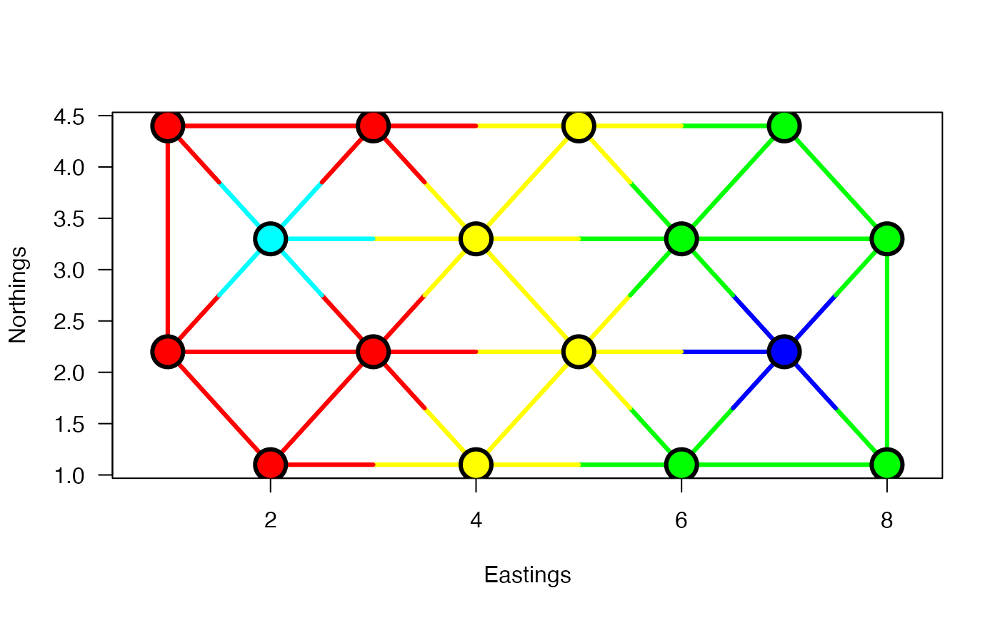

R/plot.constr.hclust.R
plot.constr.hclust.RdMethod plot.constr.hclust displays the results of space-constrained or
time-constrained agglomerative cluster analyses obtained from multivariate
dissimilarity matrices.
A constr.hclust-class object.
The number of clusters to delineate.
Optional: limits, in abscissa, of the zone to be plotted.
Optional: limits, in ordinate, of the zone to be plotted.
Optional: labels for x axis annotation.
Optional: labels for y axis annotation.
Optional: a colour or set of colours to be used for the point backgrounds (one for each of the k clusters), see Details.
Optional: a colour or set of colours to be used for the point
outlines (defaults to "black" when omitted).
Optional: reference line type (see graphical parameters for details).
Optional: reference line width (see graphical parameters for details).
Optional: a colour or set of colours to be used for the links within a cluster (defaults to the point background colours when omitted).
Should segments be drawn to represent the edges (links) (default: FALSE).
Should observation points be drawn (default: TRUE).
Point character to display observations (default: 21, a circle with a background colour).
How should hybrid segments be drawn (default: "change").
Line type to use for hybrid segments (default: lty).
Width of hybrid segments with respect to lwd (default: 1).
Colour of hybrid segments, when applicable (default: "black").
Should a new plotting window be opened first (default: TRUE).
Should the axes be displayed (default: TRUE).
Text and symbol magnification (see graphical parameters) (default: 1).
Line width around points with respect to lwd (default: 1).
Should axes be inverted on the plot (default: FALSE).
Other graphical parameters.
The plotting method uses the coordinates provided by the user of
constr.hclust to display the observations. It cuts the tree
(see cutree) into k clusters and displays each cluster using
the indices returned by cutree. The point background colours
can be provided using argument bg. When they are omitted, default
colours are provided automatically by the function as either a set of
mutually contrasting colours (when k <= 10) or rainbow colours (when
k > 10). When links = TRUE, each edge is displayed as a segment
with a colour corresponding to the identity of the clusters located at its
ends. A special treatment is done for hybrids edges: those whose ends lie in
different clusters; it is controlled by argument hybrids. When
argument hybrids="change" (the default), hybrid links are represented
as segments whose colours change halfway. When hybrids="single",
hybrid edges are shown as single-color lines, whose color is given as
argument col.hyb, whereas hybrids="none" suppresses the drawing
of hybrid edges. Whenever hybrid edges are displayed, their width with
respect to the lwd value is controlled by argument lwd.hyb.
When argument plot=FALSE, no plot command is issued and the
points (and segments when links = TRUE) are drawn over an existing
plotting window. This functionality is to allow one to plot the result of a
constrained clustering over an existing map. In that case, arguments
xlim, ylim, axes, and all other
graphical parameters to which the method plot would responds
are ignored.
When disjoint clusters are present (i.e., when the graph provided to
constr.hclust is not entirely connected), the function does not
allow one to plot fewer clusters than the number of disjoint subsets; a
warning message is issued to notify the user.
## Artificial map data from Legendre & Legendre (2012, Fig. 13.26)
## n = 16
dat <- c(41,42,25,38,50,30,41,43,43,41,30,50,38,25,42,41)
coord.dat <- matrix(c(1,3,5,7,2,4,6,8,1,3,5,7,2,4,6,8,
4.4,4.4,4.4,4.4,3.3,3.3,3.3,3.3,
2.2,2.2,2.2,2.2,1.1,1.1,1.1,1.1),16,2)
## Obtaining a list of neighbours:
library(spdep)
listW <- nb2listw(tri2nb(coord.dat), style="B")
links.mat.dat <- listw2mat(listW)
neighbors <- listw2sn(listW)[,1:2]
## Calculating the (Euclidean) distance between points:
D.dat <- dist(dat)
## Display the points:
plot(coord.dat, type='n',asp=1)
title("Delaunay triangulation")
text(coord.dat, labels=as.character(as.matrix(dat)), pos=3)
for(i in 1:nrow(neighbors))
lines(rbind(coord.dat[neighbors[i,1],],
coord.dat[neighbors[i,2],]))
## Clustering with a contiguity constraint described by a list of
## links:
grpWD2cst_constr_hclust <-
constr.hclust(
D.dat, method="ward.D2",
neighbors, coord.dat)
## Plot the results with k=5 clusters on a map:
plot(grpWD2cst_constr_hclust, k=5, links=TRUE, las=1,
xlab="Eastings", ylab="Northings", cex=3, lwd=3)

## Repeat the plot with other values of k (number of groups)